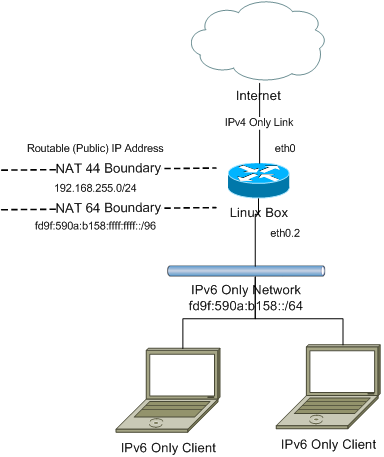

Connecting an IPv6 only site to an IPv4 only world¶
Many Internet providers cannot offer a native IPv6 Internet connection. There are many ways to send IPv6 packets over an IPv4 network. This post shows how an IPv6-only site can be interconnected to IPv4-only networks. For example, we want to configure a small home or branch office using IPv6 only, avoiding a slow 6to4 tunnel.
DNS64 and NAT64¶
An IPv6-only host can communicate with an IPv4-only host using NAT64. A NAT64 server translates IPv6 addresses into IPv4 addresses and vice versa. A virtual subnet is deployed to map all the IPv4 addresses.
We must also deploy an appropriate DNS server: IPv6-only hosts ask for AAAA DNS records, but IPv4-only hosts have A records only. DNS64 is a mechanism that translates AAAA DNS requests into A requests.
Scenario¶
We deploy the following scenario:

Requirements:
- A Linux box implements the NAT64 and DNS64 services. The newest Cisco routers can act as NAT64 and DNS64 servers too, but in this case we use a Raspberry Pi. Two connections are needed:
eth0connects the Linux box to the Internet, using a public IPv4 address.eth0.2(802.1Q) connects the IPv6-only network.- IPv6 addresses are not routed to the Internet, so we use ULAs (Unique Local Addresses). ULAs are like private IPv4 addresses and cannot be routed on the Internet. We should register a ULA IPv6 range with the SixXS registry. Two networks are required:
fd9f:590a:b158::/64is assigned to the IPv6-only hosts.fd9f:590a:b158:ffff:ffff::/96maps IPv6 and IPv4 addresses: because IPv4 addresses are 32 bits long, a 96-bit prefix is needed (although a 64-bit prefix should be allocated).- An additional IPv4 network is needed for the TAYGA daemon, which implements the NAT64 service.
Configuring the Raspberry Pi (IPv6 and 802.1Q)¶
In this scenario, we use a Raspberry Pi with an 802.1Q link. We must load the following modules:
The eth0.2 interface interconnects the IPv6 hosts:
$ cat /etc/network/interfaces
auto lo
iface lo inet loopback
auto eth0
iface eth0 inet dhcp
auto eth0.2
iface eth0.2 inet6 static
address fd9f:590a:b158::1
netmask 64
vlan-raw-device eth0
We install and configure the radvd daemon so that IPv6 hosts can autoconfigure:
$ cat /etc/radvd.conf
interface eth0.2 {
AdvSendAdvert on;
MinRtrAdvInterval 3;
MaxRtrAdvInterval 10;
prefix fd9f:590a:b158::/64 {
AdvOnLink on;
AdvAutonomous on;
};
};
Finally, we configure the Raspberry Pi as a router (IP forwarding must be enabled):
Configuring the DNS64 Daemon¶
We can use the well-known DNS server BIND (a.k.a. named) as a DNS64 server. IPv4 hosts use A records:
IPv6 hosts look for AAAA records, so we configure BIND to translate A records into AAAA ones:
$ cat /etc/bind/named.conf.options
options {
[...]
dns64 fd9f:590a:b158:ffff:ffff::/96 {
recursive-only no;
exclude {
::/0;
};
clients {
::1;
fd9f:590a:b158::/64;
};
};
};
At this point, if an AAAA record is requested, an A record is retrieved and mapped to an IPv6 address:
We add the exclude entry because this network has no IPv6 reachability. DNS64 translates only the domains that do not have AAAA records. Without exclusions, DNS64 answers with the real AAAA record:
With the exclusion configured, DNS64 answers with mapped AAAA records, one for each A record:
$ dig +short @::1 www.google.com A
173.194.35.50
173.194.35.51
173.194.35.52
173.194.35.48
173.194.35.49
$ dig +short @::1 www.google.com AAAA
fd9f:590a:b158:ffff:ffff:ffff:adc2:2333
fd9f:590a:b158:ffff:ffff:ffff:adc2:2334
fd9f:590a:b158:ffff:ffff:ffff:adc2:2330
fd9f:590a:b158:ffff:ffff:ffff:adc2:2331
fd9f:590a:b158:ffff:ffff:ffff:adc2:2332
Configuring the NAT64 Service¶
We can use the TAYGA daemon to convert IPv6 addresses into IPv4 addresses. We must use the same IPv6 prefix configured above:
$ cat /etc/tayga.conf
tun-device nat64
ipv4-addr 192.168.255.1
prefix fd9f:590a:b158:ffff:ffff:ffff::/96
dynamic-pool 192.168.255.0/24
data-dir /var/spool/tayga
We disable NAT44 because we want to configure it manually. NAT44 is required to translate the private IP addresses in the 192.168.255.0/24 network to the public IP address currently assigned to the eth0 interface:
Testing¶
Finally, IPv4 sites are reachable from IPv6 hosts:
$ ping6 -c1 fd9f:590a:b158:ffff:ffff:ffff:5e8d:1616
PING fd9f:590a:b158:ffff:ffff:ffff:5e8d:1616(fd9f:590a:b158:ffff:ffff:ffff:5e8d:1616) 56 data bytes
64 bytes from fd9f:590a:b158:ffff:ffff:ffff:5e8d:1616: icmp_seq=1 ttl=52 time=61.7 ms
They are reachable through DNS too (note that /etc/resolv.conf must be configured properly):
$ ping6 -c1 www.routereflector.com
PING www.routereflector.com(srv-hp9.netsons.net) 56 data bytes
64 bytes from srv-hp9.netsons.net: icmp_seq=1 ttl=52 time=60.0 ms
Some protocols that embed L3 addresses into L4 datagrams (like FTP or SIP) can behave unexpectedly. DNSSEC also cannot be used, because of the DNS record manipulation.